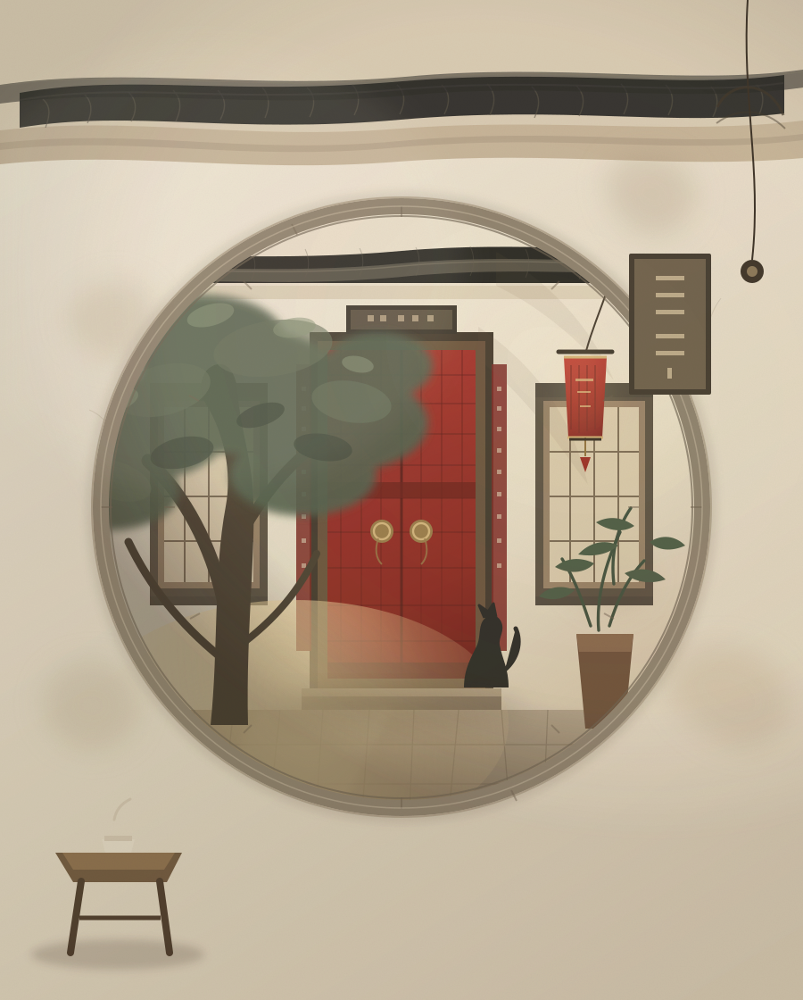
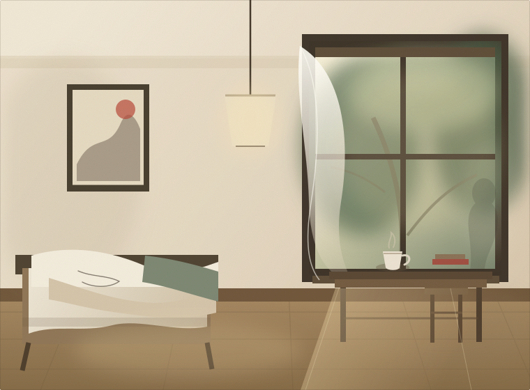
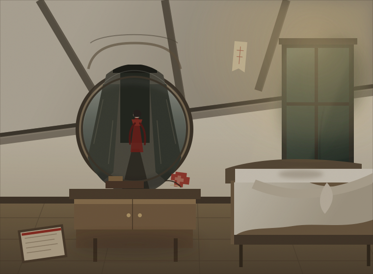
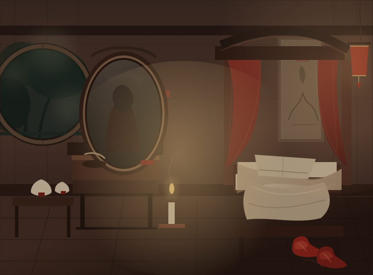
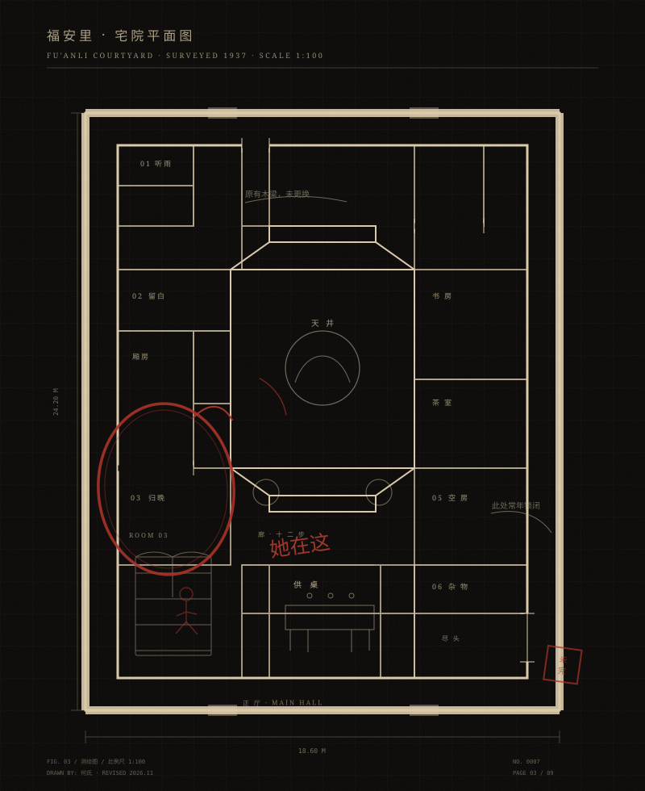
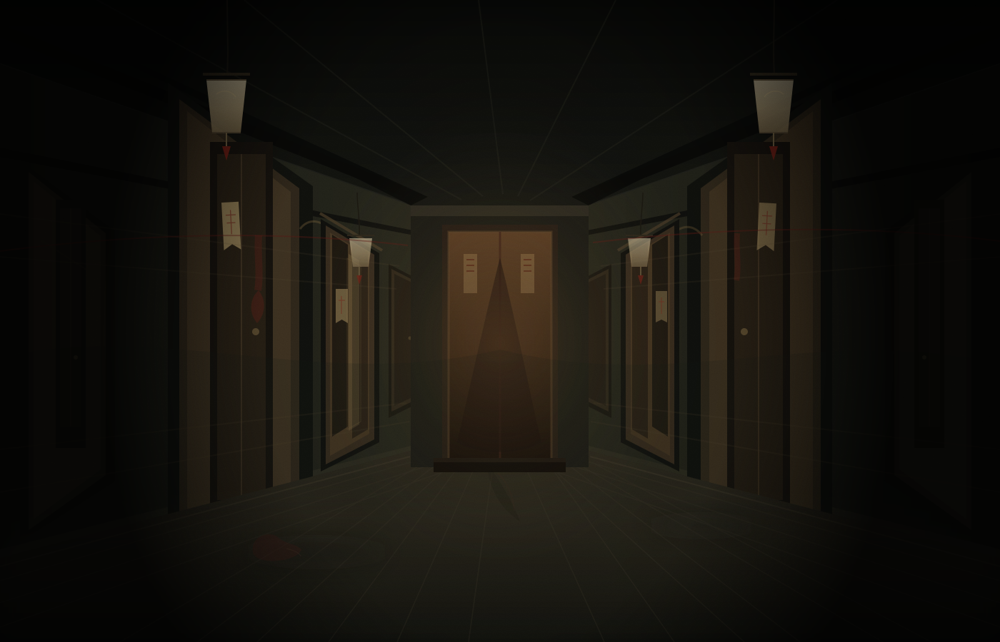

门 楣
原样保留，没有翻新。字是旧的，木头也是旧的。
西城 · 槐荫巷十七号 / 现房招租
福安里是一处由清光绪年间老宅修复而成的长租院落。
十二间房，一进院，一棵老槐。我们替晚归的人留灯，
也替早起的人烧一壶水。

一栋老房子，和一个很长的下午
我们花了四百二十天，把一栋空了很久的宅子重新点亮。
没有拆掉门槛，也没有换掉会响的楼梯。
我们保留了原有的青砖、木梁和一整面西晒的墙。修缮时，每一块砖都被编了号，拆下来，再放回原来的位置。院子里那棵老槐没有被移走。它不结果，但每年春天，都会落一地白色的花。
福安里不提供酒店式的服务。我们只负责让灯亮着，让水热着，让晚归的人知道，门朝哪一边开。
「夜里听见楼上有人走，不用怕。是木头在响。」
—— 何姨，驻院管家
原样保留，没有翻新。字是旧的，木头也是旧的。
共一千七百四十二块，每一块都还是它原来的位置。
不结果。何姨说，树跟人一样，有些事急不得。
三间房，都在等一个人
所有房间都保留一扇能打开的窗。
每月 1 日与 15 日可入住。
今日可看 1 间 / 共 12 间

01 朝 南 查看房间 ↗TING YU · ROOM 01
窗对着天井。下午四点，光会自己爬到桌上。窗对着天井。无论几点，光都会自己亮起来。
¥2,180/月一炷香/永远
押一付一 · 随时看房
02 阁 楼 查看房间 ↗LIU BAI · ROOM 02
屋顶低，月光近。适合一个人，最好是一个人。屋顶低，月光近。镜子里的那条走廊，比这间房长。
¥1,680/月一盏灯/永远
押一付一 · 1月23日空出
03 已 租 候补看房 ↗GUI WAN · ROOM 03
原主人留下的家具。长租，合同到期日未定。原主人留在这里。合同到期日，也在这里。
¥3,280/月您的一生/永远
长租 · 合同到期：—所有房型均含独立卫浴、地暖、洗衣机，与一张一米五的床。 03号房不参与本次招租，敬请谅解。
不打扰，是这里最好的服务
热水、网络、一把能坐下来的椅子。我们把这些准备好，剩下的事，交给日子自己。
灯不用关。何 何姨 · 驻院管家
它们本来就为晚归的人亮着。
在福安里三十七年。她说，这里每一盏灯，她都认得。
每一层都有。打开就有，不用等。
01周二与周五。何姨会提前敲门。
02晚归请提前说一声。门会留。
03入冬以后，天井的地砖会返潮。走路慢一点，不要跑。
西侧走廊第三盏灯接触不良，已经修了三次。它有时候会自己亮起来。
03号房较安静，请勿在门前停留，也不要敲门。
声控灯不用找开关。
它认得您的脚步声。
4.9 / 5.0 · 128 条住客评价
“采光很好。下午三点以后，屋里就不用开灯了。”
“隔音很好。夜里有人敲门，我一次也没听见。”
“管家很周到。我出差回来，桌上的茶还是温的。”
管家回复
“谢谢您把这里当成家。
想住多久，就住多久。”
何 何姨 · 驻院管家
部分评价来自 2019 年以前，已获住客家属授权刊登。
应本人要求，部分姓名已隐去。
每日只接待一位看房人
房子不怕看。怕的是，看见了却不住下来。
来之前，请先告诉我们您的名字。
「不着急。房子会等，人也会等。」
—— 何姨
从看房，到住下
告诉我们您什么时候来。茶会提前泡好。
一年起租，押一付一。合同很简单。
只有一把。请别弄丢。
从今晚起，灯火可亲。
押金会在退房当天退还。
退房请提前三十天告知管家。
向下，继续。
林氏嫁女 · 福安里
林婉卿，年十八，未嫁。
等的人，终于到了。
天地为证。
堂上只有牌位。他们等了很久。
空着的那个位置，一直是留给您的。
03号房。从今往后，不要退房。
礼成之后，请勿回头。
有些房子，活得比人久
民国二十六年 · 霜降
福安里不叫福安里的时候，叫林宅。
光绪二十三年，林家在槐荫巷起了这进院子。门朝东，厅朝南。院子不大，但足够住下一家人。
民国二十六年，林家唯一的女儿婉卿，死在出嫁前第七天。
年十八。未嫁。
夫家退了婚。林家的脸面不能退。他们按喜事的规矩，给她备了嫁妆、喜床、盖头，和一张写着「新郎未至」的婚书。
婚礼在霜降那天办的。没有宾客。吹鼓手在门外吹了一夜。第二天一早，整条槐荫巷都没有人敢开门。
再后来，宅子空了几十年。前几年，有人把它重新修好，挂上了「福安里」的牌子。
现在，这里住着十一个人。
还有一间房，一直在等。
黄铜。齿口已经磨平，锁却还开着。
新郎一栏空着。墨迹的凹痕还在。
拍摄于出嫁前一个月。底片已遗失。

槐荫巷林宅，连夕有鼓吹声，邻人叩门不应。翌日视之，门自内闭，庭中红烛犹燃，不见一人。
所以后来，它开始在网上招租。
FOR THOSE WHO ARE WILLING TO STAY
监 控 回 放 · 03
画面里没有人。只有走廊尽头的灯，亮着。
福安里 · 自民国二十六年起
这间房每隔一些年，就会住进一个新的人。
名字不同，房号相同。退房日期，也相同。
前六位，都没有退房。
头七那晚，我们会为您留门。
每晚十一点，管家会来锁门。请待在房里，不要应声。
镜子里的您如果慢半拍，请把镜面转向墙壁。
床下有人翻身时，请当作是旧木头。
听见有人叫您的名字，先看地上有没有影子。
不要在凌晨三点十七分看猫眼。
如果看见穿红衣的女人，请对她笑一笑。
您已入住。以上规定，不必遵守。
林 婉 卿民国六年 — 民国二十六年年十八 · 未嫁
福安里 · 吉时
今夜没有宾客。
只有您。
民国二十六年，霜降。
林家嫁女。
向下滚动，掀开盖头
F O L L O W - U P / 看 房 结 果
您的房间已经准备好了。
本合同自您看见时生效。
一式两份。一份在您手里，一份在墙里。
灯会一直亮着。
直到下一位看房的人来。
福安里 · 槐荫巷十七号
始于光绪二十三年 · 一直没有空过
本页面为虚构恐怖作品。福安里、林婉卿、何姨及所有事件均为虚构。页面中的所有交互、姓名与浏览记录仅在您的浏览器本地运行，不会上传或保存。本页面含突发画面与闪烁效果，建议 18 岁以上观看，请勿在深夜独自浏览。若感到不适，请立即关闭页面。